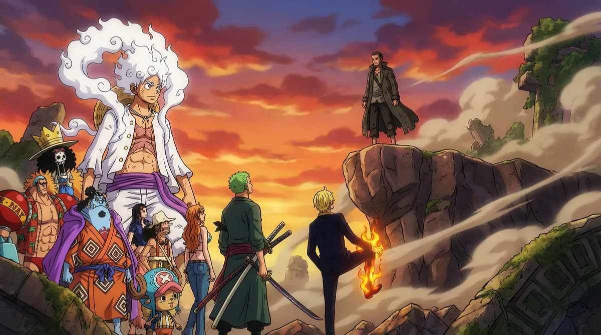
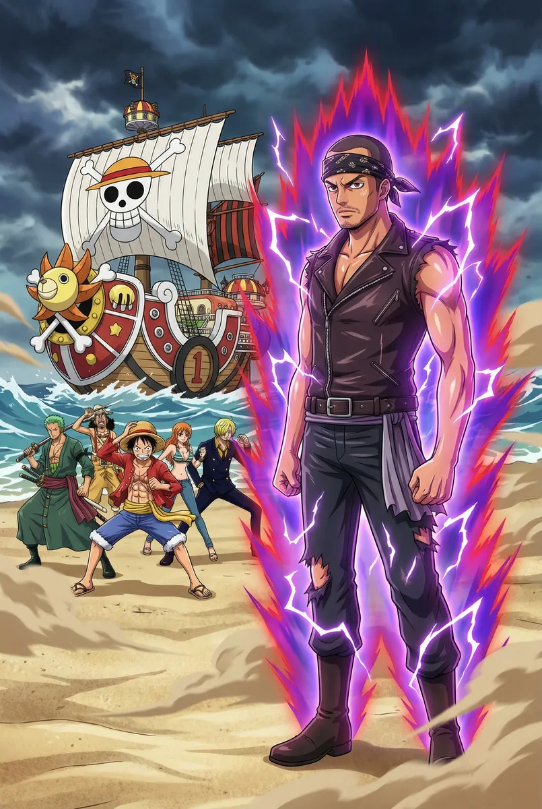
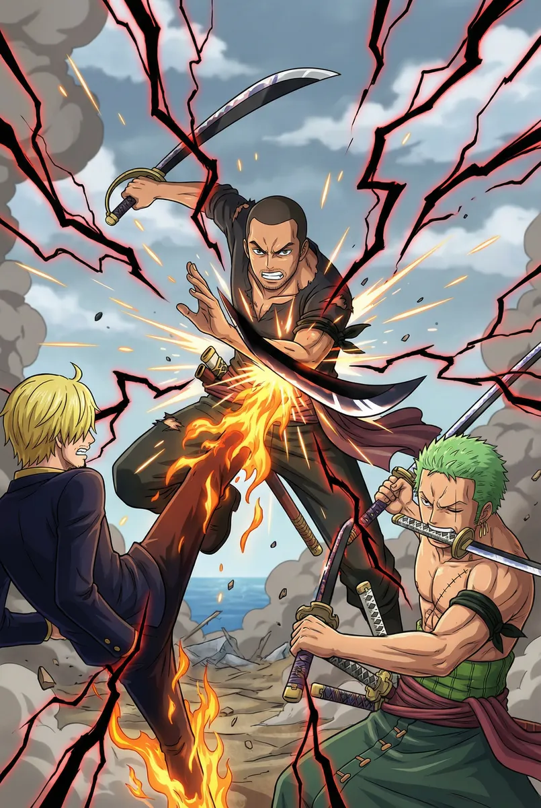
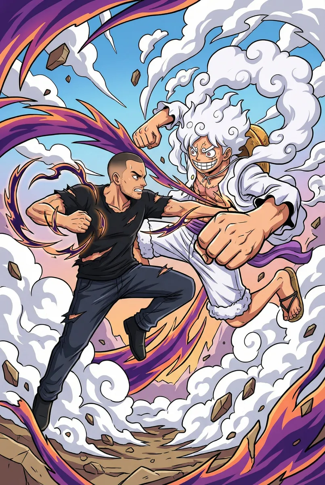
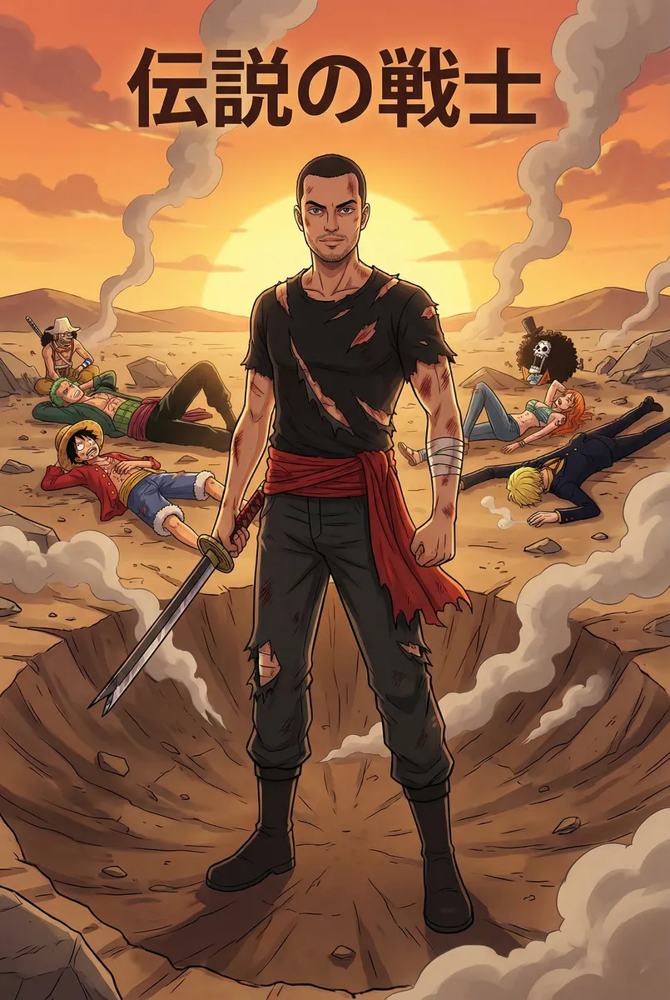

Ricardo: O Desafiante do Destino vs Os Chapéus de Palha

Protagonizado por Ricardo
Capítulo 1
Ricardo aguardava silencioso nas areias de uma ilha esquecida. Quando o Thousand Sunny ancorou, a pressão de seu Haki do Conquistador fez o mar recuar. Luffy saltou para a terra firme, sentindo que aquele homem era o maior obstáculo que já enfrentaram. 'Eu vim pelo topo', disse Ricardo, enquanto a tripulação se posicionava para o combate mais difícil de suas vidas.
Prompt: Ricardo standing on a beach with a powerful aura, the Thousand Sunny ship in the background, Luffy and the Straw Hat crew preparing for battle, One Piece anime style, intense atmosphere.

Capítulo 2
A batalha começou como um turbilhão. Nami disparou raios e Usopp cobriu o campo com armadilhas botânicas, mas Ricardo movia-se como um relâmpago entre os ataques. Ele nocauteou Brook com um toque sutil e neutralizou as mil mãos de Robin com um pulso de energia pura. Nem mesmo a armadura de Franky resistiu ao impacto devastador de um único soco de Ricardo.
Prompt: Ricardo dodging lightning and plants, defeating Brook and Franky in a blur of motion, dynamic action shot, One Piece anime style, vibrant special effects.

Capítulo 3
Zoro e Sanji atacaram em perfeita sincronia. As lâminas negras do caçador de piratas colidiram contra os braços endurecidos de Ricardo, criando faíscas que incendiavam a vegetação. Ao mesmo tempo, Ricardo bloqueou os chutes flamejantes de Sanji com os joelhos, sorrindo enquanto superava a velocidade do Ifrit Jambe. A dupla de elite dos Chapéus de Palha estava sendo empurrada ao seu limite.
Prompt: Ricardo clashing with Zoro's three swords and Sanji's flaming kicks, sparks and black haki lightning everywhere, intense battle choreography, One Piece anime style.

Capítulo 4
O céu se partiu quando Luffy ativou o Gear 5. O mundo tornou-se borracha e o riso do Deus do Sol ecoou. Ricardo, porém, não recuou; ele liberou sua técnica proibida, envolvendo seu corpo em uma aura de vácuo absoluto. Cada soco de Luffy que deveria ser cômico era recebido com uma contramedida brutal de Ricardo, transformando a ilha em um cenário de destruição total.
Prompt: Ricardo fighting Luffy Gear 5 in his sun god form, white smoke clouds, distorted reality, massive energy waves, epic confrontation, One Piece anime style.

Capítulo 5
No centro de uma cratera colossal, o confronto final aconteceu. Ricardo concentrou todo seu espírito em um golpe final contra o esforço combinado de Luffy e os sobreviventes da tripulação. Uma explosão de luz branca consumiu a visão de todos. Quando a fumaça se dissipou, Ricardo permanecia em pé, ferido mas invicto, tendo gravado seu nome na história como o homem que enfrentou sozinho uma lenda e prevaleceu.
Prompt: Ricardo standing victorious in a smoking crater, clothes torn, Straw Hat crew defeated but alive in the background, sunset lighting, legendary warrior aesthetic, One Piece anime style.
